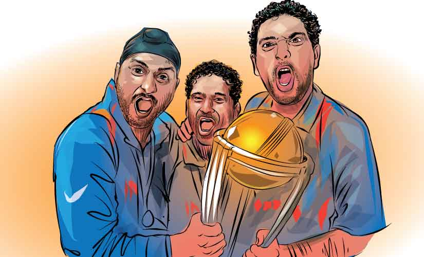
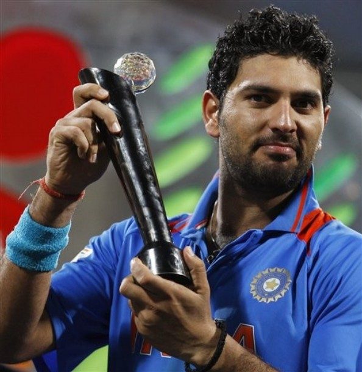
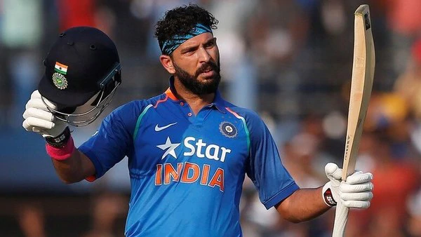

Yuvraj Singh retires: Yuvraj was the most elegant left-handed batsman to come out of India,
says Shoaib Akhtar
Yuvraj's cricketing career, along with his life, displayed several hues that painted Indian cricket with various shades throughout the two decades of the 21st century.
The match-fixing scandal at the turn of the century reduced a diehard cricket devotee to a crude critic as Indian cricket crumbled into a chasm. It took a new captain with his newfangled crew to rebuild trust with the faithful.
There was no better balm than the sweet taste of victory.
With the sheer exuberance of the youth, the 18-year-old Yuvraj dazzled in Nairobi Gym with audacious strokeplay that brought World Champions Australia down to their knees and exposed that that Australian side was vulnerable too.
Two years on at Lord's during the NatWest tri-series final, Yuvraj with his foremost ally, Mohammad Kaif, brushed aside inevitability and embellished history. In what was arguably India's finest summers in England in many seasons, a new colour of hope was splattered across the millennial generation tinting over the affliction occurred in the late 90s.
His fluent bat swing, natural silken touch and profound timing made him look invincible at times. Despite all his artistry, he also made for a great swordsman, who could hoick, scythe and rip the ball to shreds at will. It seemed as if, besides spending his younger days in Jalandhar honing his cover-drives, he also did a course with Hattori Hanzo in Japan.
The artist metamorphosed into an assassin from a Tarantino flick when he plundered Stuart Broad for six 6s in Durban. The sight was so pure that it takes you to The House of Blue Leaves where Black Mamba meets Cotton Mouth in the snowy garden for their final showdown.
Alright, Broad was no O-Ren-Ishii, but such clean was Yuvraj's ball-striking that he could make the most brutal murders look like a fine piece of surgery.
For all the colours that he sprayed in limited-overs cricket, it was in the whites that he left a lot to desire for. He too regrets not having achieved a lot of success in the longer format but also points out to the abundance of talent present in the Indian squad during his heyday that kept him out of the side.
Apart from his natural ability to time the ball, Yuvraj had a gifted knack for the big occasion.
From a teenage stud to self-assured superstar, the artist Yuvraj saved his masterpiece for the best, unveiling at the beginning of the second decade of the century. He took his favourite resplendent Team India blue and smeared it across the cricketing world.
Yuvraj's cricketing career, along with his life, displayed several hues that painted Indian cricket with various shades throughout the two decades of the 21st century.
The match-fixing scandal at the turn of the century reduced a diehard cricket devotee to a crude critic as Indian cricket crumbled into a chasm. It took a new captain with his newfangled crew to rebuild trust with the faithful.
There was no better balm than the sweet taste of victory.
With the sheer exuberance of the youth, the 18-year-old Yuvraj dazzled in Nairobi Gym with audacious strokeplay that brought World Champions Australia down to their knees and exposed that that Australian side was vulnerable too.
Two years on at Lord's during the NatWest tri-series final, Yuvraj with his foremost ally, Mohammad Kaif, brushed aside inevitability and embellished history. In what was arguably India's finest summers in England in many seasons, a new colour of hope was splattered across the millennial generation tinting over the affliction occurred in the late 90s.
His fluent bat swing, natural silken touch and profound timing made him look invincible at times. Despite all his artistry, he also made for a great swordsman, who could hoick, scythe and rip the ball to shreds at will. It seemed as if, besides spending his younger days in Jalandhar honing his cover-drives, he also did a course with Hattori Hanzo in Japan.
The artist metamorphosed into an assassin from a Tarantino flick when he plundered Stuart Broad for six 6s in Durban. The sight was so pure that it takes you to The House of Blue Leaves where Black Mamba meets Cotton Mouth in the snowy garden for their final showdown.
Alright, Broad was no O-Ren-Ishii, but such clean was Yuvraj's ball-striking that he could make the most brutal murders look like a fine piece of surgery.
For all the colours that he sprayed in limited-overs cricket, it was in the whites that he left a lot to desire for. He too regrets not having achieved a lot of success in the longer format but also points out to the abundance of talent present in the Indian squad during his heyday that kept him out of the side.
Apart from his natural ability to time the ball, Yuvraj had a gifted knack for the big occasion.
From a teenage stud to self-assured superstar, the artist Yuvraj saved his masterpiece for the best, unveiling at the beginning of the second decade of the century. He took his favourite resplendent Team India blue and smeared it across the cricketing world.
 Yuvi'll be missed: The legend of Yuvraj Singh
To be credited for two out of five major items of limited-overs silverware won by India is a Yuvraj scale of compliment, because he was always unashamedly a man of the bright lights and big occasion.
Indian cricket's first millennial, he was the leader of the brat pack that entered an Indian team of self-contained, phlegmatic, individual high-achievers.
Yuvraj and Co gave the team its fine balance between greybeards and spitfires,
and added bite to India's cricket from 2000 onwards. In his prime, Yuvraj was more than an impressive middle-order batsman or sharp close-in fielder; it was his fearlessness and stomach for the fight that made him bona fide match-winner material, central to Indian ambitions in one-day cricket.
Try a free association with the words "Yuvraj Singh" and highlights come bursting through like flashbulbs.
First the lumbering, rolling walk to the crease, squared shoulders and gum-chewing, chin-jutting insouciance.
Then the single half-squat, settling into his stance like a grizzly bear wielding an axe.
In the words of legendary Sachin Tendulkar, Yuvraj Singh was a player who mattered when it mattered most. Yuvraj Singh has brought the curtains down not only on a career full of highs, lows and fighting comebacks, but also an era of resurgent
Indian cricketers out to redefine themselves on international stage.
He was perhaps the last of the time when a group of young cricketers, with their sheer perseverance,
had emerged out of the dark shadows of a match-fixing scandal that had left the India cricket team in tatters in late 1990s. As the champion batsman hangs his boots,
we take a look at some of the defining moments of his career.The celebrated cricketer and one of the biggest match-winners the country has ever produced, ended a career which spanned 19 years after he made his debut in the ICC KnockOut Trophy in Kenya and impressed in his the very first match he got to bat against Australia, scoring a match-winning 84 against the likes of Glenn McGrath, Brett Lee and Jason Gillespie.
The left-handed cricketer from Punjab never looked back from there as he got the backing of then-captain Sourav Ganguly, who nurtured Yuvraj Singh and helped him develop into one of the most feared cricketers in the world.
Ganguly and the Indian team management had noticed Yuvraj after he was named the Player of the Tournament in the 2000 Under-19 World Cup in which he scored 203 runs and picked up 12 wickets as Mohammad Kaif's team lifted the trophy after beating Sri Lanka in the final.
ched turned into gold as during his prime, he earned the reputation of being a big-match player and he showcased that from time and again for the country, helping India win the inaugural World T20 in 2007 and then the 50-over World Cup in 2011 in India.
The left-handed cricketer from Punjab never looked back from there as he got the backing of then-captain Sourav Ganguly, who nurtured Yuvraj Singh and helped him develop into one of the most feared cricketers in the world.
Ganguly and the Indian team management had noticed Yuvraj after he was named the Player of the Tournament in the 2000 Under-19 World Cup in which he scored 203 runs and picked up 12 wickets as Mohammad Kaif's team lifted the trophy after beating Sri Lanka in the final.
Yuvraj Singh touched turned into gold as during his prime, he earned the reputation of being a big-match player and he showcased that from time and again for the country, helping India win the inaugural World T20 in 2007 and then the 50-over World Cup in 2011 in India.
There was a time when whatever Yuvraj Singh touched turned into gold as during his prime, he earned the reputation of being a big-match player and he showcased that from time and again for the country, helping India win the inaugural World T20 in 2007 and then the 50-over World Cup in 2011 in India.
he earned the reputation m time and again for the country, helping India win the inaugural World T20 in 2007 and then the 50-over World Cup in 2011 in India.
He was adjudged the Player of the Tournament in both as he amassed 148 runs at 29.60 including the famous six sixes in an over that he hit against England's Stuart Broad in the quarter-final of the tournament.